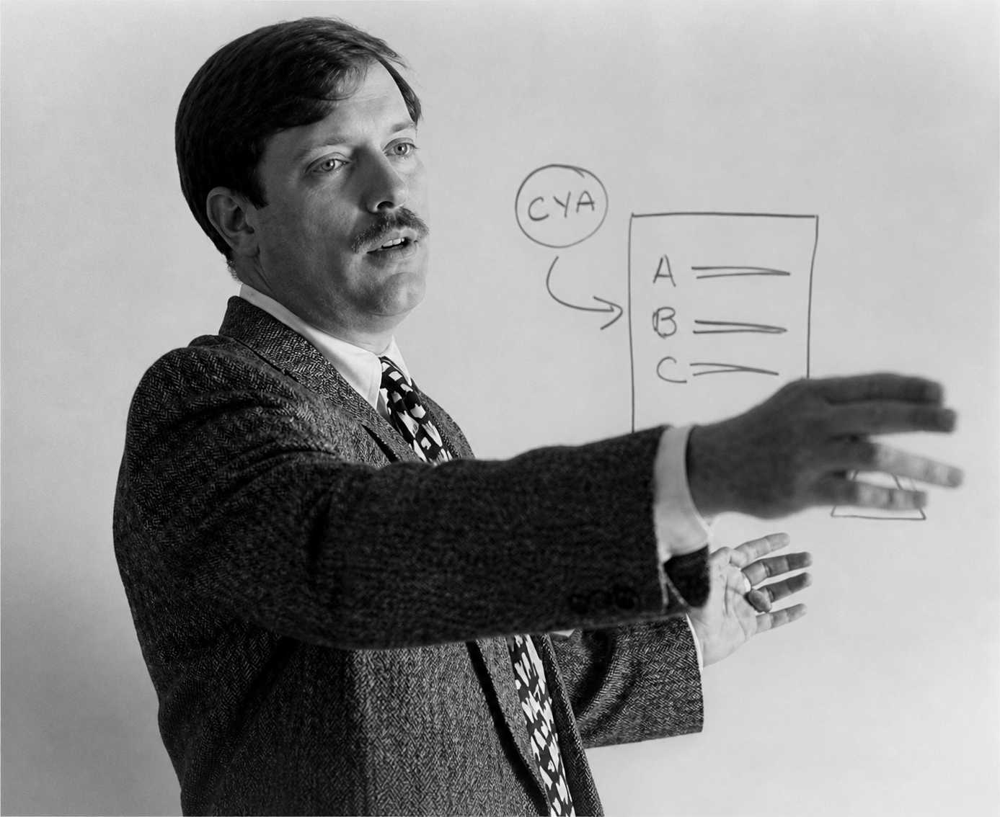

Expert-led guidance in MBE strategy, study sequencing, and Performance Test execution — built for serious applicants who refuse to leave their result to chance.

John Holtz
Performance Test Bar Review Workshop
The MBE is 200 questions across seven subjects — mastering it requires systematic subject sequencing, targeted practice, and an understanding of how NCBE constructs questions.
The Multistate Bar Examination tests your ability to apply legal principles to nuanced factual patterns. Success demands more than memorization — it requires fluency in spotting issues, eliminating traps, and reasoning under time pressure.
Our MBE strategy framework teaches you how NCBE constructs questions, which subjects yield the highest return on study time, and how to build your score floor so no section catches you off guard.
You'll leave with a clear understanding of subject weighting, your personal performance gaps, and a prioritized attack plan for the weeks ahead.
Bar prep without structure is noise. Our sequencing method builds knowledge in the right order — ensuring you're never re-learning the same concept under pressure.
Establish rule fluency across all MBE subjects. Focus on black-letter law through outlines, condensed rules, and initial exposure to NCBE question style. No timed practice yet — depth first.
Move from knowing rules to applying them. Begin timed practice sets, track error patterns by subject and question type, and develop your personal issue-spotting checklists.
Introduce full PT simulations alongside continued MBE drilling. Learn the four PT task types, library analysis, and time management under examination conditions.
Full-length simulations, targeted review of weak subjects, and exam-day logistics preparation. Mental framework for managing uncertainty on test day.
Consistent, structured daily sessions compound over time. This framework balances active learning, deliberate practice, and recovery — avoiding the burnout that derails most candidates.
Important: The daily planner is a framework, not a mandate. Candidates with work, family, or health obligations should compress sessions — consistency across fewer hours beats sporadic marathon sessions. Contact us for a personalized schedule.
The Performance Test is the most underestimated section of the California Bar Exam — and for many candidates, the highest-leverage area to improve their score. Unlike the MBE or essays, the PT tests lawyering skills, not memorization.
John Holtz has spent years developing a systematic approach to the PT that demystifies task type recognition, library analysis, and time-pressured drafting. The workshop is built around what actually works in examination conditions.
Identify memo, brief, letter, or persuasive task quickly — the first 5 minutes determine your entire approach.
Extract the controlling rule efficiently. Know which cases bind, which distinguish, and how to build your framework before writing.
Templates and frameworks for each task type that produce organized, complete answers under 90-minute pressure.
A timed approach that allocates your 90 minutes deliberately — reading, planning, drafting, and review all accounted for.
Work directly with John Holtz to build your PT competency before exam day. Sessions are available remotely for California bar applicants across the state.